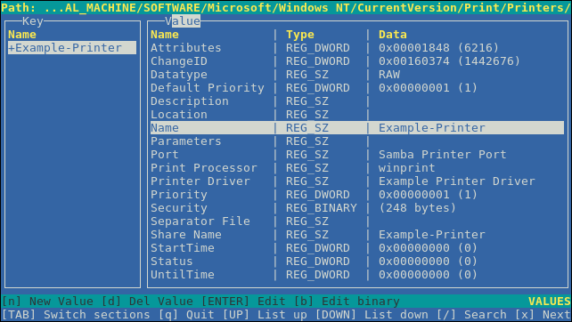

Chapter 9. 使用Samba作为服务器
Samba在Red Hat Enterprise Linux中实现了服务器消息块（SMB）协议。SMB协议用于访问服务器上的资源，例如文件共享和共享打印机。此外，Samba还实现了Microsoft Windows使用的分布式计算环境远程过程调用（DCE RPC）协议。
您可以将Samba运行为：
- Active Directory（AD）或NT4域成员
- 独立服务器
NT4主域控制器（PDC）或备份域控制器（BDC）
注意
Red Hat仅在具有支持NT4域的Windows版本的现有安装中支持PDC和BDC模式。Red Hat建议不要设置新的Samba NT4域，因为Windows 7和Windows Server 2008 R2之后的Microsoft操作系统不支持NT4域。
Red Hat不支持将Samba作为AD域控制器（DC）运行。
独立于安装模式，您可以选择共享目录和打印机。这使Samba可以充当文件和打印服务器。
先决条件
- Red Hat Enterprise Linux 8安装在服务器上。
Samba提供以下服务：
SMBD此服务使用SMB协议提供文件共享和打印服务。此外，该服务还负责资源锁定和连接用户的身份验证。
smbsystemd服务启动和停止smbd守护程序。要使用
smbd服务，请安装samba软件包。NMBD此服务使用NetBIOS over IPv4协议提供主机名和IP解析。除了名称解析之外，
nmbd服务还可以浏览SMB网络以查找域，工作组，主机，文件共享和打印机。为此，服务要么直接将此信息报告给广播客户端，要么将其转发到本地或主浏览器。nmbsystemd服务启动和停止nmbd守护程序。请注意，现代SMB网络使用DNS来解析客户端和IP地址。
要使用
nmbd服务，请安装samba软件包。winbindd服务此服务为名称服务交换机（NSS）提供了一个接口，以便在本地系统上使用AD或NT4域用户和组。例如，这使域用户能够对Samba服务器上托管的服务或其他本地服务进行身份验证。
winbindsystemd服务启动和停止winbindd守护程序。如果将Samba设置为域成员，
winbindd必须在smbd服务之前启动winbindd。否则，域用户和组不可用于本地系统。要使用
winbindd服务，请安装samba-winbind软件包。重要
Red Hat仅支持将Samba作为具有
winbindd服务的服务器运行，以便将域用户和组提供给本地系统。由于某些限制，例如缺少Windows访问控制列表（ACL）支持和NT LAN Manager（NTLM）回退，因此不支持SSSD。
testparm实用程序验证/etc/samba/smb.conf文件中的Samba配置是否正确。该实用程序检测无效的参数和值，但也检测不正确的设置，例如ID映射。如果testparm报告没有问题，Samba服务将成功加载/etc/samba/smb.conf文件。请注意， testparm无法验证配置的服务是否可用或按预期工作。
重要
Red Hat建议您在每次修改此文件后使用testparm验证/etc/samba/smb.conf文件。
程序
以
root用户身份运行testparm实用程序：# testparm Load smb config files from /etc/samba/smb.conf rlimit_max: increasing rlimit_max (1024) to minimum Windows limit (16384) Unknown parameter encountered: "log levell" Processing section "[example_share]" Loaded services file OK. ERROR: The idmap range for the domain * (tdb) overlaps with the range of DOMAIN (ad)! Server role: ROLE_DOMAIN_MEMBER Press enter to see a dump of your service definitions # Global parameters [global] ... [example_share] ...
前面的示例输出报告不存在的参数和不正确的ID映射配置。
- 如果
testparm报告配置中的参数，值或其他错误不正确，请修复问题并再次运行该实用程序。
/etc/samba/smb.conf文件的[global]部分中的security参数管理Samba如何验证连接到该服务的用户。根据您安装Samba的模式，参数必须设置为不同的值：
- 在AD域成员上，设置
security = ads 在此模式下，Samba使用Kerberos对AD用户进行身份验证。
有关将Samba设置为域成员的详细信息，请参阅“将Samba设置为域成员服务器”一节 。
- 在独立服务器上，设置
security = user 在此模式下，Samba使用本地数据库对连接用户进行身份验证。
有关将Samba设置为独立服务器的详细信息，请参阅“将Samba设置为独立服务器”一节 。
- 在NT4 PDC或BDC上，设置
security = user - 在此模式下，Samba将用户身份验证到本地或LDAP数据库。
- 在NT4域成员上，设置
security = domain 在此模式下，Samba验证将用户连接到NT4 PDC或BDC。您不能在AD域成员上使用此模式。
有关将Samba设置为域成员的详细信息，请参阅“将Samba设置为域成员服务器”一节 。
其他资源
- 请参见
smb.conf(5)手册页中的security参数说明。
您可以将Samba设置为不是域成员的服务器。在此安装模式下，Samba将用户身份验证到本地数据库而不是中央DC。此外，您可以启用访客访问权限，以允许用户无需身份验证即可连接到一个或多个服务。
本节介绍如何为Samba独立服务器设置服务器配置。
程序
安装
samba包：# yum install samba
编辑
/etc/samba/smb.conf文件并设置以下参数：[global] workgroup = Example-WG netbios name = Server security = user log file = /var/log/samba/%m.log log level = 1
此配置在
Example-WG工作组中定义名为Server的独立服务器。此外，此配置允许在最低级别（1）上进行日志记录，并且日志文件将存储在/var/log/samba/目录中。Samba会将log file参数中的%m宏扩展为连接客户端的NetBIOS名称。这将为每个客户端启用单个日志文件。配置文件或打印机共享。看到：
验证
/etc/samba/smb.conf文件：# testparm
- 如果设置需要身份验证的共享，请创建用户帐户。请参阅“创建和启用本地用户帐户”一节 。
使用
firewall-cmd实用程序打开所需的端口并重新加载防火墙配置：# firewall-cmd --permanent --add-port={139/tcp,445/tcp} # firewall-cmd --reload启动
smb服务：# systemctl start smb
（可选）启用
smb服务以在系统引导时自动启动：# systemctl enable smb
其他资源
- 有关过程中使用的参数的更多详细信息，请参见
smb.conf(5)手册页中的参数说明。 - “使用testparm实用程序验证smb.conf文件”一节
要使用户在连接到共享时进行身份验证，您必须在操作系统和Samba数据库中的Samba主机上创建帐户。Samba要求操作系统帐户验证文件系统对象上的访问控制列表（ACL）和Samba帐户以验证连接用户。
如果使用passdb backend = tdbsam缺省设置，Samba会将用户帐户存储在/var/lib/samba/private/passdb.tdb数据库中。
本节中的过程描述如何创建名为example的本地Samba用户。
先决条件
- Samba安装配置为独立服务器。
程序
创建操作系统帐户：
# useradd -M -s /sbin/nologin example
此命令添加
example帐户而不创建主目录。如果该帐户仅用于对Samba进行身份验证，请将/sbin/nologin命令指定为shell以防止该帐户在本地登录。设置操作系统帐户的密码以启用它：
# passwd example Enter new UNIX password: password Retype new UNIX password: password passwd: password updated successfully
Samba不使用操作系统帐户上设置的密码进行身份验证。但是，您需要设置密码才能启用该帐户。如果帐户被禁用，Samba将拒绝此用户连接时的访问权限。
将用户添加到Samba数据库并为该帐户设置密码：
# smbpasswd -a example New SMB password: password Retype new SMB password: password Added user example.
使用此帐户连接到Samba共享时，请使用此密码进行身份验证。
启用Samba帐户：
# smbpasswd -e example Enabled user example.
如果您运行的是AD或NT4域，请使用Samba将您的Red Hat Enterprise Linux服务器作为成员添加到域中以获得以下信息：
- 访问其他域成员的域资源
- 将域用户身份验证为本地服务，例如
sshd - 共享服务器上托管的目录和打印机，以充当文件和打印服务器
本节介绍如何将Red Hat Enterprise Linux系统加入域。
程序
安装以下包：
# yum install realmd oddjob-mkhomedir oddjob samba-winbind-clients \ samba-winbind samba-common-tools samba要在域成员上共享目录或打印机，请安装
samba软件包：# yum install samba
如果要加入AD，请另外安装Winbind Kerberos定位器插件：
# yum install samba-winbind-krb5-locator
此插件使Kerberos能够使用DNS服务记录找到基于AD站点的密钥分发中心（KDC）。
（可选）出于备份目的，重命名现有的
/etc/samba/smb.confSamba配置文件：# mv /etc/samba/smb.conf /etc/samba/smb.conf.old
加入域名。例如，要加入名为
ad.example.com的域：# realm join --client-software=winbind ad.example.com
使用上一个命令，
realm实用程序自动：- 为
ad.example.com域中的成员身份创建/etc/samba/smb.conf文件 - 将用于用户和组查找的
winbind模块添加到/etc/nsswitch.conf文件中 - 更新
/etc/pam.d/目录中的可插入验证模块（PAM）配置文件 - 启动
winbind服务并使服务在系统引导时启动
- 为
- （可选）在
/etc/samba/smb.conf文件中设置备用ID映射后端或自定义ID映射设置。有关详细信息，请参阅“Samba ID映射”一节 。 - （可选）验证配置。请参阅“验证Samba是否已正确加入域成员”一节 。
验证
winbind服务是否正在运行：# systemctl status winbind ... Active: active (running) since Tue 2018-11-06 19:10:40 CET; 15s ago
重要
要使Samba能够查询域用户和组信息，必须在启动
smb之前运行winbind服务。如果您安装了
samba软件包以共享目录和打印机，请启动smb服务：# systemctl start smb
- （可选）如果要对Active Directory的本地登录进行身份验证，请启用
winbind_krb5_localauth插件。请参阅“使用MIT Kerberos的本地授权插件”一节 。
其他资源
有关
realm实用程序的更多详细信息，请参阅realm(8)手册页
要验证您是否已将Red Hat Enterprise Linux正确添加到域中，请执行本节中有关域成员的测试。
使用getent和chown实用程序验证操作系统是否可以检索域用户和组
程序
要查询
AD域中的administrator帐户：# getent passwd "AD\administrator" AD\administrator:*:10000:10000::/home/administrator@AD:/bin/bash
要查询
AD域中Domain Users组的成员，请执行以下操作：# getent group "AD\Domain Users" AD\domain users:x:10000:user1,user2
验证在设置文件和目录的权限时可以使用域用户和组。例如，要将
/srv/samba/example.txt文件的所有者设置为AD\administrator，将该组设置为AD\Domain Users：# chown "AD\administrator":"AD\Domain Users" /srv/samba/example.txt
在AD环境中，用户可以从DC获取Kerberos票证。
本节中的过程介绍了如何验证administrator用户是否可以获取Kerberos票证。
先决条件
- 在Samba域成员上安装
krb5-workstation软件包
程序
在AD域成员上，获取administrator@AD.EXAMPLE.COM主体的票证：
# kinit administrator@AD.EXAMPLE.COM
显示缓存的Kerberos票证：
# klist Ticket cache: KCM:0 Default principal: administrator@AD.EXAMPLE.COM Valid starting Expires Service principal 01.11.2018 10:00:00 01.11.2018 20:00:00 krbtgt/AD.EXAMPLE.COM@AD.EXAMPLE.COM renew until 08.11.2018 05:00:00
winbind服务为域成员提供Active Directory用户。在某些情况下，管理员希望允许域用户对在域成员上运行的本地服务（例如SSH服务器）进行身份验证。使用Kerberos对域用户进行身份验证时，请启用winbind_krb5_localauth插件，以通过winbind服务将Kerberos主体正确映射到Active Directory帐户。
例如，如果Active Directory用户的sAMAccountName属性设置为EXAMPLE并且用户尝试使用小写的用户名进行记录，则Kerberos将以大写形式返回用户名。因此，条目与验证失败不匹配。
使用winbind_krb5_localauth插件，可以正确映射帐户名称。请注意，这仅适用于GSSAPI身份验证，而不适用于获取初始票证授予票证（TGT）。
先决条件
- Samba配置为Active Directory的成员。
- Red Hat Enterprise Linux对针对Active Directory的登录尝试进行身份验证。
winbind服务正在运行。
程序
编辑/etc/krb5.conf文件并添加以下部分：
[plugins]
localauth = {
module = winbind:/usr/lib64/samba/krb5/winbind_krb5_localauth.so
enable_only = winbind
}其他资源
- 请参见
winbind_krb5_localauth(8)手册页。
Windows域通过唯一的安全标识符（SID）区分用户和组。但是，Linux需要为每个用户和组提供唯一的UID和GID。如果您将Samba作为域成员运行，则winbindd服务负责向操作系统提供有关域用户和组的信息。
要使winbindd服务能够为用户和组提供Linux的唯一ID，您必须在/etc/samba/smb.conf文件中配置ID映射，以便：
- 本地数据库（默认域）
- Samba服务器所属的AD或NT4域
- 用户必须能够访问此Samba服务器上的资源的每个受信任域
无论您是在AD中存储Linux UID和GID，还是将Samba配置为生成它们，每个域配置都需要一个唯一的ID范围，该范围不得与任何其他域重叠。
警告
如果设置重叠的ID范围，则Samba无法正常工作。
例2.2。独特的ID范围
以下显示了默认（ * ）， AD-DOM和TRUST-DOM域的非重叠ID映射范围。
[global] ... idmap config * : backend = tdb idmap config * : range = 10000-999999 idmap config AD-DOM:backend = rid idmap config AD-DOM:range = 2000000-2999999 idmap config TRUST-DOM:backend = rid idmap config TRUST-DOM:range = 4000000-4999999
重要
您只能为每个域分配一个范围。因此，在域范围之间留出足够的空间。这使您可以在以后增加域扩展范围。
如果稍后为域分配不同的范围，则以前由这些用户和组创建的文件和目录的所有权将丢失。
在域环境中，为以下各项添加一个ID映射配置：
- Samba服务器所属的域
- 应该能够访问Samba服务器的每个受信任域
但是，对于所有其他对象，Samba会从默认域中分配ID。这包括：
- 本地Samba用户和组
- Samba内置帐户和组，例如
BUILTIN\Administrators
重要
您必须按照本节中的说明配置默认域，以使Samba正常运行。
默认域后端必须是可写的，以永久存储分配的ID。
对于默认域，您可以使用以下后端之一：
TDB配置默认域以使用
tdb后端时，请设置一个足够大的ID范围，以包括将来创建的对象，这些对象不是已定义的域ID映射配置的一部分。例如，在
/etc/samba/smb.conf文件的[global]部分中设置以下内容：idmap config * : backend = tdb idmap config * : range = 10000-999999
有关更多详细信息，请参阅“使用tdb ID映射后端”一节 。
autorid将默认域配置为使用
autorid后端时，为域添加其他ID映射配置是可选的。例如，在
/etc/samba/smb.conf文件的[global]部分中设置以下内容：idmap config * : backend = autorid idmap config * : range = 10000-999999
有关更多详细信息，请参阅“使用autorid ID映射后端”一节 。
Samba为特定配置提供不同的ID映射后端。最常用的后端是：
| 后端 | 用例 |
|---|---|
|
| 仅限 |
|
| 仅限AD域 |
|
| AD和NT4域 |
|
| AD，NT4和 |
以下部分介绍了优点，推荐的使用后端的方案以及如何配置。
winbindd服务默认使用可写tdb ID映射后端来存储安全标识符（SID），UID和GID映射表。这包括本地用户，组和内置主体。
仅将此后端用于*默认域。例如：
idmap config * : backend = tdb idmap config * : range = 10000-999999
其他资源
本节介绍如何配置Samba AD成员以使用后端ad ID映射。
ad ID映射后端实现了一个只读API，用于从AD读取帐户和组信息。这提供了以下好处：
- 所有用户和组设置都集中存储在AD中。
- 在使用此后端的所有Samba服务器上，用户和组ID是一致的。
- ID不存储在可能损坏的本地数据库中，因此文件所有权不会丢失。
注意
ad ID映射后端不支持具有单向信任的Active Directory域。如果使用单向信任在Active Directory中配置域成员，请使用以下ID映射后端之一： tdb ， rid或autorid 。
广告后端从AD读取以下属性：
| AD属性名称 | 对象类型 | 映射到 |
|---|---|---|
|
| 用户和组 | 用户名或组名，具体取决于对象 |
|
| 用户 | 用户ID（UID） |
|
| 组 | 组ID（GID） |
|
| 用户 | 用户shell的路径 |
|
| 用户 | 用户主目录的路径 |
|
| 用户 | 主要组ID |
[a]如果设置了 [b]如果设置了 | ||
先决条件
要使用ad ID映射后端：
- 用户和组都必须在AD中设置唯一ID，并且ID必须在
/etc/samba/smb.conf文件中配置的范围内。ID超出范围的对象将无法在Samba服务器上使用。 - 用户和组必须具有在AD中设置的所有必需属性。如果缺少必需的属性，则Samba服务器上将无法使用该用户或组。所需的属性取决于您的配置。
程序
编辑
/etc/samba/smb.conf文件中的[global]部分：如果默认域（
*）不存在，请添加ID映射配置。例如：idmap config * : backend = tdb idmap config * : range = 10000-999999为AD域启用
adID映射后端：idmap config DOMAIN : backend = ad设置分配给AD域中的用户和组的ID范围。例如：
idmap config DOMAIN : range = 2000000-2999999
重要
该范围不得与此服务器上的任何其他域配置重叠。此外，必须将范围设置得足够大，以包括将来分配的所有ID。有关更多详细信息，请参阅“规划Samba ID范围”一节 。
设置Samba在从AD读取属性时使用RFC 2307架构：
idmap config DOMAIN : schema_mode = rfc2307要使Samba能够从相应的AD属性中读取登录shell和用户主目录的路径，请设置：
idmap config DOMAIN : unix_nss_info = yes或者，您可以设置应用于所有用户的统一域范围的主目录路径和登录shell。例如：
template shell = /bin/bash template homedir = /home/%U
默认情况下，Samba使用用户对象的
primaryGroupID属性作为Linux上用户的主要组。或者，您可以将Samba配置为使用gidNumber属性中设置的值：idmap config DOMAIN : unix_primary_group = yes
验证
/etc/samba/smb.conf文件：# testparm
重新加载Samba配置：
# smbcontrol all reload-config
- 验证设置是否按预期工作。请参阅“验证操作系统是否可以检索域用户帐户和组”一节 。
其他资源
- 名为“*默认域名”的部分
- 有关过程中使用的参数的更多详细信息，请参见
smb.conf(5)和idmap_ad(8)手册页。 - 有关变量替换的详细信息，请参见
smb.conf(5)手册页中的VARIABLE SUBSTITUTIONS部分。 - “使用testparm实用程序验证smb.conf文件”一节
本节介绍如何配置Samba域成员以使用rid ID映射后端。
Samba可以使用Windows SID的相对标识符（RID）在Red Hat Enterprise Linux上生成ID。
注意
RID是SID的最后一部分。例如，如果用户的SID是S-1-5-21-5421822485-1151247151-421485315-30014 ，则30014是对应的RID。
rid ID映射后端实现了一个只读API，用于根据AD和NT4域的算法映射方案计算帐户和组信息。配置后端时，必须在idmap config DOMAIN : range参数中设置最低和最高RID。Samba不会映射RID低于或高于此参数中设置的用户或组。
重要
作为只读后端， rid无法分配新ID，例如BUILTIN组。因此，请勿将此后端用于*默认域。
使用摆脱端的好处
- 具有配置范围内的RID的所有域用户和组在域成员上自动可用。
- 您无需手动分配ID，主目录和登录shell。
使用摆脱端的缺点
- 所有域用户都获得相同的登录shell和主目录。但是，您可以使用变量。
- 如果所有使用具有相同ID范围设置的
ridback end，则用户和组ID在Samba域成员中仅相同。 - 您不能排除个人用户或组在域成员上的可用性。仅排除配置范围之外的用户和组。
- 根据
winbindd服务用于计算ID的公式，如果不同域中的对象具有相同的RID，则可以在多域环境中发生重复ID。
程序
编辑
/etc/samba/smb.conf文件中的[global]部分：如果默认域（
*）不存在，请添加ID映射配置。例如：idmap config * : backend = tdb idmap config * : range = 10000-999999为域启用
ridID映射后端：idmap config DOMAIN : backend = rid设置一个足够大的范围，以包括将来分配的所有RID。例如：
idmap config DOMAIN : range = 2000000-2999999
Samba忽略其域中的RID不在该范围内的用户和组。
重要
该范围不得与此服务器上的任何其他域配置重叠。有关更多详细信息，请参阅“规划Samba ID范围”一节 。
设置将分配给所有映射用户的shell和主目录路径。例如：
template shell = /bin/bash template homedir = /home/%U
验证
/etc/samba/smb.conf文件：# testparm
重新加载Samba配置：
# smbcontrol all reload-config
验证设置是否按预期工作。请参阅“验证操作系统是否可以检索域用户帐户和组”一节 。
其他资源
- 名为“*默认域名”的部分
- 有关变量替换的详细信息，请参见
smb.conf(5)手册页中的VARIABLE SUBSTITUTIONS部分。 - 有关Samba如何从RID计算本地ID的详细信息，请参阅
idmap_rid(8)手册页。 - “使用testparm实用程序验证smb.conf文件”一节
本节介绍如何配置Samba域成员以使用autorid ID映射后端。
autorid后端的工作方式类似于rid ID映射后端，但可以自动为不同的域分配ID。这使您可以在以下情况下使用autorid后端：
- 仅适用于
*默认域 - 对于
*默认域和其他域，无需为每个其他域创建ID映射配置 - 仅适用于特定域
注意
如果对默认域使用autorid则为域添加其他ID映射配置是可选的。
本节的部分内容是从Samba Wiki中发布的idmap config autorid文档中采用的。许可证： CC BY 4.0 。作者和贡献者：请参阅Wiki页面上的历史记录选项卡。
使用autorid后端的好处
- 计算的UID和GID在配置范围内的所有域用户和组在域成员上自动可用。
- 您无需手动分配ID，主目录和登录shell。
- 即使多域环境中的多个对象具有相同的RID，也没有重复的ID。
缺点
- Samba域成员中的用户和组ID不同。
- 所有域用户都获得相同的登录shell和主目录。但是，您可以使用变量。
- 您不能排除个人用户或组在域成员上的可用性。仅排除计算的UID或GID超出配置范围的用户和组。
程序
编辑
/etc/samba/smb.conf文件中的[global]部分：为
*default域启用autoridID映射后端：idmap config * : backend = autorid
设置一个足够大的范围，以便为所有现有和将来的对象分配ID。例如：
idmap config * : range = 10000-999999Samba忽略此域中计算的ID不在范围内的用户和组。
警告
设置范围并且Samba开始使用它后，您只能增加范围的上限。对范围的任何其他更改都可能导致新的ID分配，从而导致丢失文件所有权。
（可选）设置范围大小。例如：
idmap config * : rangesize = 200000Samba为每个域的对象分配此数量的连续ID，直到获取
idmap config * : range参数中设置的范围内的所有ID。设置将分配给所有映射用户的shell和主目录路径。例如：
template shell = /bin/bash template homedir = /home/%U
（可选）为域添加其他ID映射配置。如果没有可用的单个域配置，Samba将使用先前配置的
*默认域中的autorid后端设置计算ID。重要
如果为各个域配置其他后端，则所有ID映射配置的范围不得重叠。有关更多详细信息，请参阅“规划Samba ID范围”一节 。
验证
/etc/samba/smb.conf文件：# testparm
重新加载Samba配置：
# smbcontrol all reload-config
- 验证设置是否按预期工作。请参阅“验证操作系统是否可以检索域用户帐户和组”一节 。
其他资源
- 有关后端如何计算ID的详细信息，请参阅
idmap_autorid(8)手册页中的THE MAPPING FORMULAS部分。 - 有关使用
idmap configrangesize参数的详细信息，请参阅idmap_autorid(8)手册页中的rangesize参数说明。 - 有关变量替换的详细信息，请参见
smb.conf(5)手册页中的VARIABLE SUBSTITUTIONS部分。 - “使用testparm实用程序验证smb.conf文件”一节
要将Samba用作文件服务器，请将共享添加到独立服务器或域成员配置的/etc/samba/smb.conf文件中。
您可以添加使用以下任一项的共享：
- POSIX ACL。请参阅“设置使用POSIX ACL的共享”一节 。
- 细粒度的Windows ACL。请参阅“设置使用Windows ACL的共享”一节 。
先决条件
Samba已设置为以下模式之一：
作为Linux服务，Samba支持与POSIX ACL共享。它们使您能够使用实用程序（例如chmod在Samba服务器上本地管理权限。如果共享存储在支持扩展属性的文件系统上，则可以定义具有多个用户和组的ACL。
注意
如果需要使用细粒度Windows ACL，请参阅“设置使用Windows ACL的共享”一节 。
本节的部分内容是从Samba Wiki中发布的使用POSIX ACL设置共享文档中采用的。许可证： CC BY 4.0 。作者和贡献者：请参阅Wiki页面上的历史记录选项卡。
本节介绍如何创建名为example的共享，该共享提供/srv/samba/example/目录的内容，并使用POSIX ACL。
程序
如果该文件夹不存在，请创建该文件夹。例如：
# mkdir -p /srv/samba/example/
如果在
enforcing模式下运行SELinux，请在目录上设置samba_share_t上下文：# semanage fcontext -a -t samba_share_t "/srv/samba/example(/.*)?" # restorecon -Rv /srv/samba/example/
- 在目录上设置文件系统ACL。请参阅“设置使用POSIX ACL的共享”一节 。
将示例共享添加到
/etc/samba/smb.conf文件中。例如，要添加共享写入启用：[example] path = /srv/samba/example/ read only = no
注意
无论文件系统ACL如何;如果未设置
read only = no，Samba将以只读模式共享目录。验证
/etc/samba/smb.conf文件：# testparm
打开所需的端口并使用
firewall-cmd实用程序重新加载防火墙配置：# firewall-cmd --permanent --add-service=samba # firewall-cmd --reload
重启
smb服务：# systemctl restart smb
（可选）启用smb服务以在引导时自动启动：
# systemctl enable smb
其他资源
本节介绍如何在使用POSIX ACL的共享上设置ACL。
使用POSIX ACL的股票支持：
- 标准Linux ACL。有关详细信息，请参阅“设置标准Linux ACL”一节 。
- 扩展ACL。有关详细信息，请参阅“设置扩展ACL”一节 。
先决条件
- 已根据“添加使用POSIX ACL的共享”一节设置了POSIX ACL的共享 。
Linux上的标准ACL支持为一个所有者，一个组和所有其他未定义用户设置权限。您可以使用chown ， chgrp和chmod实用程序来更新ACL。如果需要精确控制，则使用更复杂的POSIX ACL，请参阅“设置扩展ACL”一节 。
以下过程将/srv/samba/example/目录的所有者设置为root用户，授予Domain Users组的读写权限，并拒绝所有其他用户的访问权限。
程序
# chown root:"Domain Users" /srv/samba/example/ # chmod 2770 /srv/samba/example/
注意
在目录上启用set-group-ID（SGID）位会自动将所有新文件和子目录的默认组设置为目录组的默认组，而不是将其设置为创建该目录的用户的主组的通常行为。新目录条目。
其他资源
- 有关权限的更多详细信息，请参阅
chown(1)和chmod(1)手册页。
如果存储共享目录的文件系统支持扩展ACL，则可以使用它们来设置复杂权限。扩展ACL可以包含多个用户和组的权限。
扩展POSIX ACL使您可以配置具有多个用户和组的复杂ACL。但是，您只能设置以下权限：
- 无法访问
- 读取权限
- 写访问权限
- 完全控制
如果需要细粒度Windows权限（例如“ Create folder / append data ，请将共享配置为使用Windows ACL。请参阅“设置使用Windows ACL的共享”一节 。
以下过程说明如何在共享上启用扩展ACL。此外，它还包含有关设置扩展ACL的示例。
程序
在
/etc/samba/smb.conf文件的share's部分中启用以下参数以启用扩展ACL的ACL继承：inherit acls = yes
有关详细信息，请参阅
smb.conf(5）手册页中的参数说明。重启
smb服务：# systemctl restart smb
在目录上设置ACL。例如：
例2.3。设置扩展ACL
以下过程为
Domain Admins组设置读取，写入和执行权限，为Domain Users组设置读取和执行权限，并拒绝访问/srv/samba/example/目录中的所有其他人：禁用对主要用户帐户组的自动授予权限：
# setfacl -m group::--- /srv/samba/example/ # setfacl -m default:group::--- /srv/samba/example/
该目录的主要组
CREATOR GROUP映射到动态CREATOR GROUP主体。在Samba共享上使用扩展POSIX ACL时，会自动添加此主体，但您无法将其删除。设置目录的权限：
授予
Domain Admins组读取，写入和执行权限：# setfacl -m group:"DOMAIN\Domain Admins":rwx /srv/samba/example/授予
Domain Users组的读取和执行权限：# setfacl -m group:"DOMAIN\Domain Users":r-x /srv/samba/example/设置
otherACL条目的权限，拒绝访问与其他ACL条目不匹配的用户：# setfacl -R -m other::--- /srv/samba/example/
这些设置仅适用于此目录。在Windows中，这些ACL映射到
This folder only模式。要使在此目录中创建的新文件系统对象继承上一步中设置的权限，请执行以下操作：
# setfacl -m default:group:"DOMAIN\Domain Admins":rwx /srv/samba/example/ # setfacl -m default:group:"DOMAIN\Domain Users":r-x /srv/samba/example/ # setfacl -m default:other::--- /srv/samba/example/
使用这些设置，主体的
This folder only模式现在设置为此This folder, subfolders, and files。
Samba将过程中设置的权限映射到以下Windows ACL：
主要 访问 适用于 域 \域管理员
完全控制
此文件夹，子文件夹和文件
域 \域用户
阅读并执行
此文件夹，子文件夹和文件
Everyone[一]没有
此文件夹，子文件夹和文件
所有者 （ Unix用户\所有者 ） [b]
完全控制
仅此文件夹
没有
仅此文件夹
完全控制
仅限子文件夹和文件
没有
仅限子文件夹和文件
[a] Samba从
otherACL条目映射此主体的权限。[b] Samba将目录的所有者映射到此条目。
[c] Samba将目录的主要组映射到此条目。
[d]在新文件系统对象上，创建者自动继承该主体的权限。
[e]从使用POSIX ACL的共享不支持的ACL配置或删除这些主体。
[f]在新文件系统对象上，创建者的主要组自动继承此主体的权限。
（可选）要限制或授予对Samba共享的访问权限，可以在/etc/samba/smb.conf文件的共享部分中设置某些参数。
注意
如果用户，组或主机能够访问共享，则基于共享的权限进行管理。这些设置不会影响文件系统ACL。
使用基于共享的设置来限制对共享的访问，例如，拒绝来自特定主机的访问。
先决条件
- 已根据“添加使用POSIX ACL的共享”一节设置了POSIX ACL的共享 。
通过基于用户和组的访问控制，您可以为某些用户和组授予或拒绝对共享的访问权限。
程序
例如，要允许
Domain Users组的所有成员在拒绝user帐户访问时访问共享，请将以下参数添加到共享的配置中：valid users = +DOMAIN\"Domain Users" invalid users = DOMAIN\user
invalid users参数的优先级高于valid users参数。例如，如果user帐户是Domain Users组的成员，则在使用上一个示例时，将拒绝访问此帐户。重新加载Samba配置：
# smbcontrol all reload-config
其他资源
- 有关更多详细信息，请参阅
smb.conf(5)手册页中的参数说明。
基于主机的访问控制使您可以根据客户端的主机名，IP地址或IP范围授予或拒绝对共享的访问权限。
以下过程说明如何启用127.0.0.1 IP地址， 192.0.2.0/24 IP范围和client1.example.com主机以访问共享，并另外拒绝访问client2.example.com主机：
程序
将以下参数添加到
/etc/samba/smb.conf文件中共享的配置中：hosts allow = 127.0.0.1 192.0.2.0/24 client1.example.com hosts deny = client2.example.com
hosts deny参数的优先级高于hosts allow优先级。例如，如果client1.example.com解析为hosts allow参数中列出的IP地址，则拒绝访问此主机。重新加载Samba配置：
# smbcontrol all reload-config
其他资源
- 有关更多详细信息，请参阅
smb.conf(5)手册页中的参数说明。
Samba支持在共享和文件系统对象上设置Windows ACL。这使您能够：
- 使用细粒度Windows ACL
- 使用Windows管理共享权限和文件系统ACL
或者，您可以配置共享以使用POSIX ACL。有关详细信息，请参阅“设置使用POSIX ACL的共享”一节 。
本节的部分内容是从Samba Wiki中发布的“ 使用Windows ACL设置共享”文档中采用的。许可证： CC BY 4.0 。作者和贡献者：请参阅Wiki页面上的历史记录选项卡。
只有授予SeDiskOperatorPrivilege权限的用户和组才能为使用Windows ACL的共享配置权限。
程序
例如，要将
SeDiskOperatorPrivilege权限授予DOMAIN \Domain Admins组：# net rpc rights grant "DOMAIN\Domain Admins" SeDiskOperatorPrivilege \ -U "DOMAIN\administrator" Enter DOMAIN\administrator's password: Successfully granted rights.
注意
在域环境中，将
SeDiskOperatorPrivilege授予域组。这使您可以通过更新用户的组成员身份来集中管理权限。列出已授予
SeDiskOperatorPrivilege所有用户和组：# net rpc rights list privileges SeDiskOperatorPrivilege \ -U "DOMAIN\administrator" Enter administrator's password: SeDiskOperatorPrivilege: BUILTIN\Administrators DOMAIN\Domain Admins
要配置支持Windows ACL的共享，必须在Samba中启用此功能。
先决条件
- 在Samba服务器上配置用户共享。
程序
要为所有共享全局启用它，请将以下设置添加到
/etc/samba/smb.conf文件的[global]部分：vfs objects = acl_xattr map acl inherit = yes store dos attributes = yes
或者，您可以通过向共享的部分添加相同的参数来为单个共享启用Windows ACL支持。
重启
smb服务：# systemctl restart smb
本节介绍如何创建名为example的共享，该共享共享/srv/samba/example/目录的内容，并使用Windows ACL。
程序
如果该文件夹不存在，请创建该文件夹。例如：
# mkdir -p /srv/samba/example/
如果在
enforcing模式下运行SELinux，请在目录上设置samba_share_t上下文：# semanage fcontext -a -t samba_share_t "/srv/samba/example(/.*)?" # restorecon -Rv /srv/samba/example/
将示例共享添加到
/etc/samba/smb.conf文件中。例如，要添加共享写入启用：[example] path = /srv/samba/example/ read only = no
注意
无论文件系统ACL如何;如果未设置
read only = no，Samba将以只读模式共享目录。如果尚未在
[global]部分中为所有共享启用Windows ACL支持，请将以下参数添加到[example]部分以为此共享启用此功能：vfs objects = acl_xattr map acl inherit = yes store dos attributes = yes
验证
/etc/samba/smb.conf文件：# testparm
打开所需的端口并使用
firewall-cmd实用程序重新加载防火墙配置：# firewall-cmd --permanent --add-service=samba # firewall-cmd --reload
重启
smb服务：# systemctl restart smb
其他资源
smbcacls实用程序可以列出，设置和删除存储在SMB共享中的文件和目录的ACL。您可以使用smbcacls来管理文件系统ACL：
- 在使用高级Windows ACL或POSIX ACL的本地或远程Samba服务器上
- 在Red Hat Enterprise Linux上远程管理Windows上托管的共享上的ACL
文件系统对象的每个ACL条目都包含以下格式的访问控制条目（ACE）：
security_principal:access_right/inheritance_information/permissions
例2.4。访问控制条目
如果AD\Domain Users组具有适用于Windows上This folder, subfolders, and files Modify权限，则ACL包含以下ACE：
AD\Domain Users:ALLOWED/OI|CI/CHANGE
ACE包含以下部分：
- 安全负责人
- 安全主体是应用ACL中的权限的用户，组或SID。
- 访问权
- 定义是否授予或拒绝对对象的访问。该值可以
ALLOWED或DENIED。 - 继承信息
存在以下值：
此外，值可以组合如下：
- 权限
此值可以是表示一个或多个Windows权限的十六进制值或
smbcacls别名：十六进制值，表示一个或多个Windows权限。
下表以十六进制格式显示高级Windows权限及其对应值：
表2.3。Windows权限及其对应的smbcacl值以十六进制格式表示
Windows权限 十六进制值 完全控制
0x001F01FF遍历文件夹/执行文件
0x00100020列出文件夹/读取数据
0x00100001读属性
0x00100080读扩展属性
0x00100008创建文件/写入数据
0x00100002创建文件夹/附加数据
0x00100004写属性
0x00100100写扩展属性
0x00100010删除子文件夹和文件
0x00100040删除
0x00110000读取权限
0x00120000更改权限
0x00140000取得所有权
0x00180000可以使用逐位
OR运算将多个权限组合为单个十六进制值。有关详细信息，请参阅“ACE掩码计算”一节 。smbcacls别名。下表显示了可用的别名：表2.4。现有的smbcacls别名及其相应的Windows权限
smbcacls别名映射到Windows权限 [R读
读阅读并执行
w ^特别：
- 创建文件/写入数据
- 创建文件夹/附加数据
- 写属性
- 写扩展属性
- 读取权限
d删除
P更改权限
Ø取得所有权
X遍历/执行
更改修改
充分完全控制
注意
设置权限时，可以组合单字母别名。例如，您可以设置
RD以应用Windows权限Read和Delete。但是，您既不能组合多个非单字母别名，也不能组合别名和十六进制值。
要在SMB共享上显示ACL，请使用smbcacls实用程序。如果运行smbcacls而没有任何操作参数（例如--add ，该实用程序将显示文件系统对象的ACL。
程序
例如，要列出//server/example共享的根目录的ACL：
# smbcacls //server/example / -U "DOMAIN\administrator" Enter DOMAIN\administrator's password: REVISION:1 CONTROL:SR|PD|DI|DP OWNER:AD\Administrators GROUP:AD\Domain Users ACL:AD\Administrator:ALLOWED/OI|CI/FULL ACL:AD\Domain Users:ALLOWED/OI|CI/CHANGE ACL:AD\Domain Guests:ALLOWED/OI|CI/0x00100021
该命令的输出显示：
-
REVISION：安全描述符的内部Windows NT ACL修订版 -
CONTROL：安全描述符控制 -
OWNER：安全描述符OWNER名称或SID -
GROUP：安全描述符组的名称或SID -
ACL条目。有关详细信息，请参阅“访问控制条目”一节 。
在大多数情况下，当您添加或更新ACE，您使用smbcacls中列出的别名表2.4，“现有smbcacls别名及其相应的Windows许可” 。
但是，如果要设置表2.3“Windows权限及其相应的smbcacls值以十六进制格式”中列出的高级Windows权限，则必须使用按位OR运算来计算正确的值。您可以使用以下shell命令来计算值：
# echo $(printf '0x%X' $(( hex_value_1 | hex_value_2 | ... )))
根据传递给smbcacls实用程序的参数，您可以从文件或目录添加，更新和删除ACL。
添加ACL
要将ACL添加到//server/example共享的根目录，该共享权限This folder, subfolders, and files CHANGE权限授予AD\Domain Users组：
# smbcacls //server/example / -U "DOMAIN\administrator \
--add ACL:"AD\Domain Users":ALLOWED/OI|CI/CHANGE更新ACL
更新ACL与添加新ACL类似。您可以通过使用带有现有安全主体的--modify参数覆盖ACL来更新ACL。如果smbcacls在ACL列表中找到安全主体，则该实用程序将更新权限。否则命令失败并显示错误：
ACL for SID principal_name not found例如，要更新AD\Domain Users组的权限并将其设置为READ for This folder, subfolders, and files ：
# smbcacls //server/example / -U "DOMAIN\administrator \
--modify ACL:"AD\Domain Users":ALLOWED/OI|CI/READ删除ACL
要删除ACL，请将带有确切ACL的--delete参数传递给smbcacls实用程序。例如：
# smbcacls //server/example / -U "DOMAIN\administrator \
--delete ACL:"AD\Domain Users":ALLOWED/OI|CI/READ在Samba服务器上，您可以配置用户可以共享没有root权限的目录。
在用户可以共享目录之前，管理员必须在Samba中启用用户共享。
例如，仅允许本地example组的成员创建用户共享。
程序
创建本地
example组（如果它不存在）：# groupadd example
准备Samba目录以存储用户共享定义并正确设置其权限。例如：
创建目录：
# mkdir -p /var/lib/samba/usershares/
设置
example组的写入权限：# chgrp example /var/lib/samba/usershares/ # chmod 1770 /var/lib/samba/usershares/
- 设置粘滞位以防止用户重命名或删除此目录中其他用户存储的文件。
编辑
/etc/samba/smb.conf文件并将以下内容添加到[global]部分：设置指定用于存储用户共享定义的目录的路径。例如：
usershare path = /var/lib/samba/usershares/
设置允许在此服务器上创建Samba的用户份额。例如：
usershare max shares = 100
如果对
usershare max shares参数使用默认值0，则禁用用户共享。（可选）设置绝对目录路径列表。例如，要配置Samba仅允许共享要共享的
/data和/srv目录的子目录，请设置：usershare prefix allow list = /data /srv
有关可以设置的其他用户共享相关参数的列表，请参阅
smb.conf(5)手册页中的USERSHARES部分。验证
/etc/samba/smb.conf文件：# testparm
重新加载Samba配置：
# smbcontrol all reload-config
用户现在可以创建用户共享。有关详细信息，请参阅“添加用户共享”一节 。
其他资源
根据“启用用户共享功能”一节配置Samba后，用户可以通过运行net usershare add命令在没有root权限的情况下共享Samba服务器上的目录。
net usershare add命令的概要：
net usershare add share_name path [[comment] | [ACLs]] [guest_ok = y | n]
重要
如果在创建用户共享时设置ACL，则必须在ACL之前指定comment参数。要设置空注释，请在双引号中使用空字符串。
请注意，如果管理员在/etc/samba/smb.conf文件的[global]部分中设置usershare allow guests = yes ，则用户只能在用户共享上启用访客访问权限。
要更新用户共享的设置，请使用具有相同共享名称和新设置的net usershare add命令覆盖共享。请参阅“添加用户共享”一节 。
用户可以在Samba服务器上输入net usershare info命令以显示用户共享及其设置。
先决条件
- 在Samba服务器上配置用户共享。
程序
要显示任何用户创建的所有用户共享：
$ net usershare info -l [share_1] path=/srv/samba/ comment= usershare_acl=Everyone:R,host_name\user:F, guest_ok=y ...
要仅列出运行该命令的用户创建的共享，请省略
-l参数。要仅显示有关特定共享的信息，请将共享名称或通配符传递给该命令。例如，要显示名称以
share_开头的共享信息：$ net usershare info -l share_*
在某些情况下，您希望共享用户无需身份验证即可连接的目录。要配置此功能，请在共享上启用访客访问权限。
警告
不需要身份验证的共享可能存在安全风险。
如果在共享上启用了访客访问，Samba会将访客连接映射到guest account参数中设置的操作系统guest account 。如果满足以下条件中的至少一个条件，访客用户可以访问此共享上的文件：
- 该帐户列在文件系统ACL中
other用户的POSIX权限允许它
例2.7。来宾共享权限
如果您将Samba配置为将来宾帐户映射到nobody （默认值），则以下示例中的ACL为：
- 允许访客用户阅读
file1.txt - 允许访客用户阅读和修改
file2.txt - 阻止访客用户阅读或修改
file3.txt
-rw-r--r--. 1 root root 1024 1. Sep 10:00 file1.txt -rw-r-----. 1 nobody root 1024 1. Sep 10:00 file2.txt -rw-r-----. 1 root root 1024 1. Sep 10:00 file3.txt
程序
编辑
/etc/samba/smb.conf文件：如果这是您在此服务器上设置的第一个访客共享：
在
[global]部分中将map to guest = Bad User设置map to guest = Bad User：[global] ... map to guest = Bad User使用此设置，Samba拒绝使用不正确密码的登录尝试，除非用户名不存在。如果指定的用户名不存在，并且在共享上启用了访客访问，则Samba会将该连接视为访客登录。
默认情况下，Samba将来宾帐户映射到Red Hat Enterprise Linux上的
nobody帐户。或者，您可以设置其他帐户。例如：[global] ... guest account = user_name此参数中设置的帐户必须在Samba服务器上本地存在。出于安全原因，Red Hat建议使用未分配有效shell的帐户。
将
guest ok = yes设置添加到[example]share部分：[example] ... guest ok = yes
验证
/etc/samba/smb.conf文件：# testparm
重新加载Samba配置：
# smbcontrol all reload-config
其他资源
如果将Samba设置为打印服务器，则网络中的客户端可以使用Samba进行打印。此外，如果配置了Windows客户端，则可以从Samba服务器下载驱动程序。
本节的部分内容是从Samba Wiki中发布的设置Samba作为打印服务器文档中采用的。许可证： CC BY 4.0 。作者和贡献者：请参阅Wiki页面上的历史记录选项卡。
Samba spoolssd是一个集成到smbd服务中的服务。在Samba配置中启用spoolssd可显着提高具有大量作业或打印机的打印服务器的性能。
如果没有spoolssd ，Samba会spoolssd smbd进程并为每个打印作业初始化printcap缓存。在大量打印机的情况下， smbd服务在初始化缓存时可能会在多秒内无响应。spoolssd服务使您能够启动预先分叉的smbd进程，这些进程正在处理打印作业而没有任何延迟。主spoolssd smbd进程使用少量内存，并分叉和终止子进程。
以下过程说明了如何启用spoolssd服务。
程序
编辑
/etc/samba/smb.conf文件中的[global]部分：添加以下参数：
rpc_server:spoolss = external rpc_daemon:spoolssd = fork
（可选）您可以设置以下参数：
参数 默认 描述 spoolssd：prefork_min_children五
最小子进程数
spoolssd：prefork_max_children25
最大子进程数
spoolssd：prefork_spawn_rate五
如果建立新连接，
spoolssd:prefork_max_children此参数中设置的新子进程数，最多为spoolssd:prefork_max_children设置的值spoolssd：prefork_max_allowed_clients100
客户端数量，子进程服务
spoolssd：prefork_child_min_life60
子进程的最短生存期（以秒为单位）。 60秒是最小的。
验证
/etc/samba/smb.conf文件：# testparm
重启
smb服务：# systemctl restart smb
重新启动服务后，Samba会自动启动
smbd子进程：# ps axf ... 30903 smbd 30912 \_ smbd 30913 \_ smbd 30914 \_ smbd 30915 \_ smbd ...
其他资源
本节介绍如何在Samba中启用打印服务器支持。
程序
在Samba服务器上，设置CUPS并将打印机添加到CUPS后端。有关在CUPS中配置打印机的详细信息;请参阅打印服务器上CUPS Web控制台（https：// print_server_host_name ：631 / help）中提供的文档。
注意
如果在Samba打印服务器上本地安装了CUPS，Samba只能将打印作业转发到CUPS。
编辑
/etc/samba/smb.conf文件：如果要启用
spoolssd服务，请将以下参数添加到[global]部分：rpc_server:spoolss = external rpc_daemon:spoolssd = fork
要配置打印后端，请添加
[printers]部分：[printers] comment = All Printers path = /var/tmp/ printable = yes create mask = 0600重要
[printers]共享名称是硬编码的，无法更改。
验证
/etc/samba/smb.conf文件：# testparm
打开所需的端口并使用
firewall-cmd实用程序重新加载防火墙配置：# firewall-cmd --permanent --add-service=samba # firewall-cmd --reload
重启
smb服务：# systemctl restart smb
重新启动服务后，Samba会自动共享CUPS后端中配置的所有打印机。如果要仅手动共享特定打印机，请参阅“手动共享特定打印机”一节 。
其他资源
- 有关您可以设置的更多详细信息和
spoolssd参数，请参阅“Samba spoolssd服务”一节 - “使用testparm实用程序验证smb.conf文件”一节
如果将Samba配置为打印服务器，则默认情况下，Samba共享在CUPS后端配置的所有打印机。以下过程说明如何仅共享特定的打印机。
先决条件
- Samba设置为打印服务器
程序
编辑
/etc/samba/smb.conf文件：在
[global]部分中，通过设置禁用自动打印机共享：load printers = no
为要共享的每台打印机添加一个部分。例如，要在CUPS后端共享名为
example的打印机作为Samba中的Example-Printer，请添加以下部分：[Example-Printer] path = /var/tmp/ printable = yes printer name = example每个打印机不需要单独的假脱机目录。您可以在
[printers]部分中设置的打印机path参数中设置相同的假脱机目录。
验证
/etc/samba/smb.conf文件：# testparm
重新加载Samba配置：
# smbcontrol all reload-config
其他资源
如果您正在为Windows客户端运行Samba打印服务器，则可以上载驱动程序和预配置打印机。如果用户连接到打印机，Windows会自动在客户端上本地下载并安装驱动程序。用户不需要本地管理员权限进行安装。此外，Windows还会应用预配置的驱动程序设置，例如托盘数量。
本节的部分内容是从Samba Wiki中发布的设置Windows客户端自动打印机驱动程序下载文档中采用的。许可证： CC BY 4.0 。作者和贡献者：请参阅Wiki页面上的历史记录选项卡。
先决条件
- Samba设置为打印服务器
本节提供有关打印机驱动程序的一般信息
支持的驱动程序型号版
Samba仅支持Windows 2000及更高版本以及Windows Server 2000及更高版本支持的打印机驱动程序模型版本3。Samba不支持Windows 8和Windows Server 2012中引入的驱动程序模型版本4。但是，这些以及后来的Windows版本也支持版本3驱动程序。
包感知驱动程序
Samba不支持包感知驱动程序。
准备打印机驱动程序以进行上载
在将驱动程序上载到Samba打印服务器之前：
- 如果驱动程序以压缩格式提供，请解压缩驱动程序。
某些驱动程序需要启动一个安装应用程序，该应用程序在Windows主机上本地安装驱动程序。在某些情况下，安装程序会在安装运行期间将各个文件提取到操作系统的临时文件夹中。要使用驱动程序文件进行上传：
- 启动安装程序。
- 将文件从临时文件夹复制到新位置。
- 取消安装。
向打印机制造商咨询支持上传到打印服务器的驱动程序。
为客户端提供打印机的32位和64位驱动程序
要为32位和64位Windows客户端提供打印机驱动程序，必须为两种体系结构上载具有完全相同名称的驱动程序。例如，如果要上载名为Example PostScript的32位驱动程序和名为Example PostScript (v1.0)的64位驱动程序，则名称不匹配。因此，您只能将其中一个驱动程序分配给打印机，并且两个体系结构都不能使用该驱动程序。
为了能够上载和预配置打印机驱动程序，用户或组需要授予SePrintOperatorPrivilege权限。必须将用户添加到printadmin组中。安装samba软件包时，Red Hat Enterprise Linux会自动创建该组。printadmin组被分配了低于1000的最低可用动态系统GID。
程序
例如，要将
SePrintOperatorPrivilege权限授予printadmin组：# net rpc rights grant "printadmin" SePrintOperatorPrivilege \ -U "DOMAIN\administrator" Enter DOMAIN\administrator's password: Successfully granted rights.注意
在域环境中，将
SePrintOperatorPrivilege授予域组。这使您可以通过更新用户的组成员身份来集中管理权限。列出已授予
SePrintOperatorPrivilege所有用户和组：# net rpc rights list privileges SePrintOperatorPrivilege \ -U "DOMAIN\administrator" Enter administrator's password: SePrintOperatorPrivilege: BUILTIN\Administrators DOMAIN\printadmin
Windows操作系统从打印服务器的名为print$的共享中下载打印机驱动程序。此共享名称在Windows中是硬编码的，无法更改。
以下过程说明如何将/var/lib/samba/drivers/目录共享为print$ ，并使本地printadmin组的成员能够上载打印机驱动程序。
程序
将
[print$]部分添加到/etc/samba/smb.conf文件中：[print$] path = /var/lib/samba/drivers/ read only = no write list = @printadmin force group = @printadmin create mask = 0664 directory mask = 2775使用这些设置：
只有
printadmin组的成员才能将打印机驱动程序上载到共享。- 新创建的文件和目录组将设置为
printadmin。 - 新文件的权限将设置为
664。 - 新目录的权限将设置为
2775。
- 新创建的文件和目录组将设置为
要仅为打印机上载64位驱动程序，请在
/etc/samba/smb.conf文件的[global]部分中包含此设置：spoolss: architecture = Windows x64
如果没有此设置，Windows仅显示至少已上载32位版本的驱动程序。
验证
/etc/samba/smb.conf文件：# testparm
重新加载Samba配置
# smbcontrol all reload-config
如果
printadmin组不存在，请创建它：# groupadd printadmin
将
SePrintOperatorPrivilege权限授予printadmin组。# net rpc rights grant "printadmin" SePrintOperatorPrivilege \ -U "DOMAIN\administrator" Enter DOMAIN\administrator's password: Successfully granted rights.如果在
enforcing模式下运行SELinux，请在目录上设置samba_share_t上下文：# semanage fcontext -a -t samba_share_t "/var/lib/samba/drivers(/.*)?" # restorecon -Rv /var/lib/samba/drivers/
在
/var/lib/samba/drivers/目录上设置权限：如果使用POSIX ACL，请设置：
# chgrp -R "printadmin" /var/lib/samba/drivers/ # chmod -R 2775 /var/lib/samba/drivers/
如果使用Windows ACL，请设置：
主要 访问 适用于 创造者所有者完全控制
仅限子文件夹和文件
认证用户读取和执行，列出文件夹内容，读取
此文件夹，子文件夹和文件
printadmin完全控制
此文件夹，子文件夹和文件
有关在Windows上设置ACL的详细信息，请参阅Windows文档。
其他资源
出于安全原因，最近的Windows操作系统会阻止客户端从不受信任的服务器下载不支持包的打印机驱动程序。如果您的打印服务器是AD中的成员，则可以在域中创建组策略对象（GPO）以信任Samba服务器。
先决条件
- Samba打印服务器是AD域的成员。
- 用于创建GPO的Windows计算机必须安装Windows远程服务器管理工具（RSAT）。有关详细信息，请参阅Windows文档。
程序
- 使用允许编辑组策略的帐户登录Windows计算机，例如AD域
Administrator用户。 - 打开
Group Policy Management Console。 右键单击您的AD域，然后选择
Create a GPO in this domain, and Link it here。
- 输入GPO的名称，例如
Legacy Printer Driver Policy，然后单击“OK。新的GPO将显示在域条目下。 - 右键单击新创建的GPO，然后选择“
Edit以打开“Group Policy Management Editor。 导航到 → → → 。

在窗口的右侧，双击“
Point and Print Restriction以编辑策略：启用策略并设置以下选项：
- 选择
Users can only point and print to these servers，并将Samba打印服务器的完全限定域名（FQDN）输入到此选项旁边的字段。 在“
Security Prompts下的两个复选框中，选择Do not show warning or elevation prompt。
- 选择
- 单击确定。
双击
Package Point and Print - Approved servers以编辑策略：- 启用该策略，然后单击“
Show按钮。 输入Samba打印服务器的FQDN。

- 单击“
OK关闭“Show Contents和策略的属性窗口。
- 启用该策略，然后单击“
- 关闭
Group Policy Management Editor。 - 关闭
Group Policy Management Console。
Windows域成员应用组策略后，当用户连接到打印机时，将自动从Samba服务器下载打印机驱动程序。
其他资源
- 有关使用组策略的更多详细信息，请参阅Windows文档。
本章介绍了在某些情况下哪些设置可以提高Samba的性能，以及哪些设置可能会对性能产生负面影响。
本节的部分内容是从Samba Wiki中发布的性能调优文档中采用的。许可证： CC BY 4.0 。作者和贡献者：请参阅Wiki页面上的历史记录选项卡。
先决条件
- Samba设置为文件或打印服务器
每个新的SMB版本都会增加功能并提高协议的性能。最近的Windows和Windows Server操作系统始终支持最新的协议版本。如果Samba也使用最新的协议版本，连接到Samba的Windows客户端将从性能改进中受益。在Samba中，服务器最大协议的默认值设置为最新支持的稳定SMB协议版本。
注意
要始终启用最新的稳定SMB协议版本，请不要设置server max protocol参数。如果手动设置参数，则需要使用每个新版本的SMB协议修改设置，以启用最新的协议版本。
以下过程说明如何使用server max protocol参数中的默认值。
程序
- 从
/etc/samba/smb.conf文件的[global]部分中删除server max protocol参数。 重新加载Samba配置
# smbcontrol all reload-config
Linux支持区分大小写的文件名。因此，在搜索或访问文件时，Samba需要扫描目录中的大写和小写文件名。您可以配置共享以仅以小写或大写形式创建新文件，从而提高性能。
先决条件
- Samba配置为文件服务器
程序
将共享上的所有文件重命名为小写。
注意
使用此过程中的设置，将不再显示名称不是小写的文件。
在共享的部分中设置以下参数：
case sensitive = true default case = lower preserve case = no short preserve case = no
有关参数的详细信息，请参阅
smb.conf(5)手册页中的说明。验证
/etc/samba/smb.conf文件：# testparm
重新加载Samba配置：
# smbcontrol all reload-config
应用这些设置后，此共享上所有新创建的文件的名称使用小写。由于这些设置，Samba不再需要扫描目录中的大写和小写，这样可以提高性能。
其他资源
samba文档
本章介绍使用Samba服务器时经常使用的命令。
net实用程序使您可以在Samba服务器上执行多个管理任务。本节介绍net实用程序最常用的子命令。
先决条件
- 安装了
samba-common-tools包。
使用net实用程序的join子命令，可以将Samba加入AD或NT4域。要加入域，您必须手动创建/etc/samba/smb.conf文件，并可选择更新其他配置，例如PAM。
重要
Red Hat建议使用realm实用程序加入域。realm实用程序会自动更新所有涉及的配置文件。有关详细信息，请参阅“将Samba加入域”一节 。
程序
使用以下设置手动创建
/etc/samba/smb.conf文件：对于AD域成员：
[global] workgroup = domain_name security = ads passdb backend = tdbsam realm = AD_REALM
对于NT4域成员：
[global] workgroup = domain_name security = user passdb backend = tdbsam
- 为
*default域和要加入的域添加ID映射配置到/etc/samba/smb.conf文件中的[global]部分。有关详细信息，请参阅“Samba ID映射”一节 。 验证
/etc/samba/smb.conf文件：# testparm
以域管理员身份加入域：
要加入AD域：
# net ads join -U "DOMAIN\administrator"
要加入NT4域名：
# net rpc join -U "DOMAIN\administrator"
将
winbind源附加到/etc/nsswitch.conf文件中的passwd和group数据库条目：passwd: files
winbindgroup: fileswinbind启用并启动
winbind服务：# systemctl enable winbind # systemctl start winbind
（可选）使用
authselect实用程序配置PAM。有关详细信息，请参见
authselect(8)手册页。（可选）对于AD环境，请配置Kerberos客户端。
有关详细信息，请参阅Kerberos客户端的文档。
其他资源
在Windows中，您可以为帐户和组分配权限以执行特殊操作，例如在共享上设置ACL或上载打印机驱动程序。在Samba服务器上，您可以使用net rpc rights命令来管理权限。
列出您可以设置的权限
要列出所有可用权限及其所有者，请使用net rpc rights list命令。例如：
net rpc rights list -U "DOMAIN\administrator" Enter DOMAIN\administrator's password: SeMachineAccountPrivilege Add machines to domain SeTakeOwnershipPrivilege Take ownership of files or other objects SeBackupPrivilege Back up files and directories SeRestorePrivilege Restore files and directories SeRemoteShutdownPrivilege Force shutdown from a remote system SePrintOperatorPrivilege Manage printers SeAddUsersPrivilege Add users and groups to the domain SeDiskOperatorPrivilege Manage disk shares SeSecurityPrivilege System security
授予权限
要为帐户或组授予权限，请使用net rpc rights grant命令。
例如，将SePrintOperatorPrivilege权限授予DOMAIN \printadmin组：
# net rpc rights grant "DOMAIN\printadmin" SePrintOperatorPrivilege \ -U "DOMAIN\administrator" Enter DOMAIN\administrator's password: Successfully granted rights.
撤销特权
要撤消帐户或组的权限，请使用net rpc rights revoke命令。
例如，要从DOMAIN \printadmin组撤消SePrintOperatorPrivilege权限：
# net rpc rights remoke "DOMAIN\printadmin" SePrintOperatorPrivilege \ -U "DOMAIN\administrator" Enter DOMAIN\administrator's password: Successfully revoked rights.
net rpc share命令提供在本地或远程Samba或Windows服务器上列出，添加和删除共享的功能。
上市股票
要列出SMB服务器上的net rpc share list ，请使用net rpc share list命令。（可选）将-S server_name参数传递给命令以列出远程服务器的共享。例如：
# net rpc share list -U "DOMAIN\administrator" -S server_name Enter DOMAIN\administrator's password: IPC$ share_1 share_2 ...
注意
在/etc/samba/smb.conf文件的部分中具有browseable = no set的Samba服务器上托管的共享不会显示在输出中。
添加分享
net rpc share add命令可以将共享添加到SMB服务器。
例如，要在共享C:\example\目录的远程Windows服务器上添加名为example的共享：
# net rpc share add example="C:\example" -U "DOMAIN\administrator" -S server_name
注意
指定Windows目录名时，必须省略路径中的尾部反斜杠。
要使用该命令将共享添加到Samba服务器：
-U参数中指定的用户必须在目标服务器上授予SeDiskOperatorPrivilege特权。- 您必须编写一个脚本，将共享部分添加到
/etc/samba/smb.conf文件并重新加载Samba。必须在/etc/samba/smb.conf的[global]部分的add share command参数中设置该脚本。有关更多详细信息，请参阅smb.conf(5)手册页中的add share command说明。
删除共享
net rpc share delete命令可以从SMB服务器中删除共享。
例如，要从远程Windows服务器中删除名为example的共享：
# net rpc share delete example -U "DOMAIN\administrator" -S server_name
要使用该命令从Samba服务器中删除共享：
-U参数中指定的用户必须具有SeDiskOperatorPrivilege权限。- 您必须编写一个脚本，从
/etc/samba/smb.conf文件中删除共享部分并重新加载Samba。必须在/etc/samba/smb.conf的[global]部分的delete share command参数中设置该脚本。有关更多详细信息，请参见smb.conf(5)手册页中的delete share command说明。
net user命令使您可以在AD DC或NT4 PDC上执行以下操作：
- 列出所有用户帐户
- 添加用户
- 删除用户
注意
只有在列出域用户帐户时，才需要指定连接方法，例如AD域的ads或NT4域的rpc 。其他与用户相关的子命令可以自动检测连接方法。
将-U user_name参数传递给该命令，以指定允许执行请求的操作的用户。
列出域用户帐户
列出AD域中的所有用户：
# net ads user -U "DOMAIN\administrator"列出NT4域中的所有用户：
# net rpc user -U "DOMAIN\administrator"将用户帐户添加到域
在Samba域成员上，您可以使用net user add命令将用户帐户添加到域。
例如，将user帐户添加到域：
添加帐户：
# net user add user password -U "DOMAIN\administrator" User user added
（可选）使用远程过程调用（RPC）shell在AD DC或NT4 PDC上启用该帐户。例如：
# net rpc shell -U DOMAIN\administrator -S DC_or_PDC_name Talking to domain DOMAIN (S-1-5-21-1424831554-512457234-5642315751) net rpc> user edit disabled user: no Set user's disabled flag from [yes] to [no] net rpc> exit
从域中删除用户帐户
在Samba域成员上，您可以使用net user delete命令从域中删除用户帐户。
例如，要从域中删除user帐户：
# net user delete user -U "DOMAIN\administrator" User user deleted
在Samba服务器上，您可以配置用户可以共享没有root权限的目录。
在用户可以共享目录之前，管理员必须在Samba中启用用户共享。
例如，仅允许本地example组的成员创建用户共享。
程序
创建本地
example组（如果它不存在）：# groupadd example
准备Samba目录以存储用户共享定义并正确设置其权限。例如：
创建目录：
# mkdir -p /var/lib/samba/usershares/
设置
example组的写入权限：# chgrp example /var/lib/samba/usershares/ # chmod 1770 /var/lib/samba/usershares/
- 设置粘滞位以防止用户重命名或删除此目录中其他用户存储的文件。
编辑
/etc/samba/smb.conf文件并将以下内容添加到[global]部分：设置指定用于存储用户共享定义的目录的路径。例如：
usershare path = /var/lib/samba/usershares/
设置允许在此服务器上创建Samba的用户份额。例如：
usershare max shares = 100
如果对
usershare max shares参数使用默认值0，则禁用用户共享。（可选）设置绝对目录路径列表。例如，要配置Samba仅允许共享要共享的
/data和/srv目录的子目录，请设置：usershare prefix allow list = /data /srv
有关可以设置的其他用户共享相关参数的列表，请参阅
smb.conf(5)手册页中的USERSHARES部分。验证
/etc/samba/smb.conf文件：# testparm
重新加载Samba配置：
# smbcontrol all reload-config
用户现在可以创建用户共享。有关详细信息，请参阅“添加用户共享”一节 。
其他资源
根据“启用用户共享功能”一节配置Samba后，用户可以通过运行net usershare add命令在没有root权限的情况下共享Samba服务器上的目录。
net usershare add命令的概要：
net usershare add share_name path [[comment] | [ACLs]] [guest_ok = y | n]
重要
如果在创建用户共享时设置ACL，则必须在ACL之前指定comment参数。要设置空注释，请在双引号中使用空字符串。
请注意，如果管理员在/etc/samba/smb.conf文件的[global]部分中设置usershare allow guests = yes ，则用户只能在用户共享上启用访客访问权限。
要更新用户共享的设置，请使用具有相同共享名称和新设置的net usershare add命令覆盖共享。请参阅“添加用户共享”一节 。
用户可以在Samba服务器上输入net usershare info命令以显示用户共享及其设置。
先决条件
- 在Samba服务器上配置用户共享。
程序
要显示任何用户创建的所有用户共享：
$ net usershare info -l [share_1] path=/srv/samba/ comment= usershare_acl=Everyone:R,host_name\user:F, guest_ok=y ...
要仅列出运行该命令的用户创建的共享，请省略
-l参数。要仅显示有关特定共享的信息，请将共享名称或通配符传递给该命令。例如，要显示名称以
share_开头的共享信息：$ net usershare info -l share_*
rpcclient实用程序使您可以在本地或远程SMB服务器上手动执行客户端Microsoft远程过程调用（MS-RPC）功能。但是，大多数功能都集成到Samba提供的单独实用程序中。仅使用rpcclient测试MS-PRC功能。
先决条件
- 安装了
samba-client软件包。
例子
例如，您可以使用rpcclient实用程序：
其他资源
有关受支持的子命令的完整列表，请参阅rpcclient(1)手册页中的COMMANDS部分。
某些设置（如打印机配置）存储在Samba服务器的注册表中。您可以使用基于ncurses的samba-regedit应用程序来编辑Samba服务器的注册表。

先决条件
- 安装了
samba-client软件包。
程序
要启动该应用程序，请输入：
# samba-regedit
使用以下键：
- 光标向上和光标向下：浏览注册表树和值。
- 输入 ：打开键或编辑值。
-
选项卡 ：在“
Key和“Value窗格之间切换。 - Ctrl + C ：关闭应用程序。
smbcacls实用程序可以列出，设置和删除存储在SMB共享中的文件和目录的ACL。您可以使用smbcacls来管理文件系统ACL：
- 在使用高级Windows ACL或POSIX ACL的本地或远程Samba服务器上
- 在Red Hat Enterprise Linux上远程管理Windows上托管的共享上的ACL
文件系统对象的每个ACL条目都包含以下格式的访问控制条目（ACE）：
security_principal:access_right/inheritance_information/permissions
例2.12。访问控制条目
如果AD\Domain Users组具有适用于Windows上This folder, subfolders, and files Modify权限，则ACL包含以下ACE：
AD\Domain Users:ALLOWED/OI|CI/CHANGE
ACE包含以下部分：
- 安全负责人
- 安全主体是应用ACL中的权限的用户，组或SID。
- 访问权
- 定义是否授予或拒绝对对象的访问。该值可以
ALLOWED或DENIED。 - 继承信息
存在以下值：
此外，值可以组合如下：
- 权限
此值可以是表示一个或多个Windows权限的十六进制值或
smbcacls别名：十六进制值，表示一个或多个Windows权限。
下表以十六进制格式显示高级Windows权限及其对应值：
表2.7。Windows权限及其对应的smbcacl值以十六进制格式表示
Windows权限 十六进制值 完全控制
0x001F01FF遍历文件夹/执行文件
0x00100020列出文件夹/读取数据
0x00100001读属性
0x00100080读扩展属性
0x00100008创建文件/写入数据
0x00100002创建文件夹/附加数据
0x00100004写属性
0x00100100写扩展属性
0x00100010删除子文件夹和文件
0x00100040删除
0x00110000读取权限
0x00120000更改权限
0x00140000取得所有权
0x00180000可以使用逐位
OR运算将多个权限组合为单个十六进制值。有关详细信息，请参阅“ACE掩码计算”一节 。smbcacls别名。下表显示了可用的别名：表2.8。现有的smbcacls别名及其相应的Windows权限
smbcacls别名映射到Windows权限 [R读
读阅读并执行
w ^特别：
- 创建文件/写入数据
- 创建文件夹/附加数据
- 写属性
- 写扩展属性
- 读取权限
d删除
P更改权限
Ø取得所有权
X遍历/执行
更改修改
充分完全控制
注意
设置权限时，可以组合单字母别名。例如，您可以设置
RD以应用Windows权限Read和Delete。但是，您既不能组合多个非单字母别名，也不能组合别名和十六进制值。
要在SMB共享上显示ACL，请使用smbcacls实用程序。如果运行smbcacls而没有任何操作参数（例如--add ，该实用程序将显示文件系统对象的ACL。
程序
例如，要列出//server/example共享的根目录的ACL：
# smbcacls //server/example / -U "DOMAIN\administrator" Enter DOMAIN\administrator's password: REVISION:1 CONTROL:SR|PD|DI|DP OWNER:AD\Administrators GROUP:AD\Domain Users ACL:AD\Administrator:ALLOWED/OI|CI/FULL ACL:AD\Domain Users:ALLOWED/OI|CI/CHANGE ACL:AD\Domain Guests:ALLOWED/OI|CI/0x00100021
该命令的输出显示：
-
REVISION：安全描述符的内部Windows NT ACL修订版 -
CONTROL：安全描述符控制 -
OWNER：安全描述符OWNER名称或SID -
GROUP：安全描述符组的名称或SID -
ACL条目。有关详细信息，请参阅“访问控制条目”一节 。
在大多数情况下，当您添加或更新ACE，您使用smbcacls中列出的别名表2.4，“现有smbcacls别名及其相应的Windows许可” 。
但是，如果要设置表2.3“Windows权限及其相应的smbcacls值以十六进制格式”中列出的高级Windows权限，则必须使用按位OR运算来计算正确的值。您可以使用以下shell命令来计算值：
# echo $(printf '0x%X' $(( hex_value_1 | hex_value_2 | ... )))
根据传递给smbcacls实用程序的参数，您可以从文件或目录添加，更新和删除ACL。
添加ACL
要将ACL添加到//server/example共享的根目录，该共享权限This folder, subfolders, and files CHANGE权限授予AD\Domain Users组：
# smbcacls //server/example / -U "DOMAIN\administrator \
--add ACL:"AD\Domain Users":ALLOWED/OI|CI/CHANGE更新ACL
更新ACL与添加新ACL类似。您可以通过使用带有现有安全主体的--modify参数覆盖ACL来更新ACL。如果smbcacls在ACL列表中找到安全主体，则该实用程序将更新权限。否则命令失败并显示错误：
ACL for SID principal_name not found例如，要更新AD\Domain Users组的权限并将其设置为READ for This folder, subfolders, and files ：
# smbcacls //server/example / -U "DOMAIN\administrator \
--modify ACL:"AD\Domain Users":ALLOWED/OI|CI/READ删除ACL
要删除ACL，请将带有确切ACL的--delete参数传递给smbcacls实用程序。例如：
# smbcacls //server/example / -U "DOMAIN\administrator \
--delete ACL:"AD\Domain Users":ALLOWED/OI|CI/READ使用smbclient实用程序可以访问SMB服务器上的文件共享，类似于命令行FTP客户端。例如，您可以使用它来上传和下载共享文件。
例如，要使用DOMAIN\user帐户对托管在server上的example共享进行身份验证：
# smbclient -U "DOMAIN\user" //server/example Enter domain\user's password: Try "help" to get a list of possible commands. smb: \>
在smbclient成功连接到共享后，该实用程序进入交互模式并显示以下提示：
smb: \>
要在交互式shell中显示所有可用命令，请输入：
smb: \> help
要显示特定命令的帮助，请输入：
smb: \> help command_name其他资源
- 有关交互式shell中可用命令的更多详细信息和说明，请参见
smbclient(1)手册页。
如果使用不带-c参数的smbclient ，该实用程序将进入交互模式。以下过程说明如何连接到SMB共享并从子目录下载文件。
程序
连接到共享：
# smbclient -U "DOMAIN\user_name" //server_name/share_name
转到
/example/目录：smb: \> cd /example/
列出目录中的文件：
smb: \example\> ls . D 0 Thu Nov 1 10:00:00 2018 .. D 0 Thu Nov 1 10:00:00 2018 example.txt N 1048576 Thu Nov 1 10:00:00 2018 9950208 blocks of size 1024. 8247144 blocks available下载
example.txt文件：smb: \example\> get example.txt getting file \directory\subdirectory\example.txt of size 1048576 as example.txt (511975,0 KiloBytes/sec) (average 170666,7 KiloBytes/sec)
断开与共享：
smb: \example\> exit
smbcontrol实用程序使您可以将命令消息发送到smbd ， nmbd ， winbindd或所有这些服务。这些控制消息指示服务，例如，重新加载其配置。
本节中的过程说明如何通过将reload-config消息类型发送到all目标来重新加载smbd ， nmbd ， winbindd服务reload-config 。
先决条件
- 安装了
samba-common-tools包。
程序
# smbcontrol all reload-config
其他资源
有关更多详细信息和可用命令消息类型的列表，请参见smbcontrol(1)手册页。
smbpasswd实用程序管理本地Samba数据库中的用户帐户和密码。
先决条件
- 安装了
samba-common-tools包。
程序
如果以用户身份运行该命令，则
smbpasswd更改运行该命令的用户的Samba密码。例如：[user@server ~]$ smbpasswd New SMB password: password Retype new SMB password: password
如果以
root用户身份运行smbpasswd，则可以使用该实用程序，例如：创建一个新用户：
[root@server ~]# smbpasswd -a user_name New SMB password: password Retype new SMB password: password Added user user_name.
注意
在将用户添加到Samba数据库之前，必须在本地操作系统中创建该帐户。请参阅“配置和管理系统管理指南”中的“ 添加新用户”部分。
启用Samba用户：
[root@server ~]# smbpasswd -e user_name Enabled user user_name.
禁用Samba用户：
[root@server ~]# smbpasswd -x user_name Disabled user ser_name
删除用户：
[root@server ~]# smbpasswd -x user_name Deleted user user_name.
其他资源
有关更多详细信息，请参见smbpasswd(8)手册页。
smbstatus实用程序报告：
- 每个
smbd守护进程的每个PID到Samba服务器的连接。此报告包括用户名，主要组，SMB协议版本，加密和签名信息。 - 每个Samba共享的连接数。此报告包括
smbd守护程序的PID，连接计算机的IP，建立连接时的时间戳，加密和签名信息。 - 锁定文件列表。报告条目包括更多详细信息，例如机会锁定（oplock）类型
先决条件
samba包已安装。smbd服务正在运行。
程序
# smbstatus Samba version 4.7.1 PID Username Group Machine Protocol Version Encryption Signing ----------------------------------------------------------------------------------------------------------------------------- 963 DOMAIN\administrator DOMAIN\domain users client-pc (ipv4:192.0.2.1:57786) SMB3_02 - AES-128-CMAC Service pid Machine Connected at Encryption Signing: ------------------------------------------------------------------------------- example 969 192.0.2.1 Thu Nov 1 10:00:00 2018 CEST - AES-128-CMAC Locked files: Pid Uid DenyMode Access R/W Oplock SharePath Name Time ------------------------------------------------------------------------------------------------------------ 969 10000 DENY_WRITE 0x120089 RDONLY LEASE(RWH) /srv/samba/example file.txt Thu Nov 1 10:00:00 2018
其他资源
有关更多详细信息，请参见smbstatus(1)手册页。
smbtar实用程序备份SMB共享的内容或其子目录，并将内容存储在tar存档中。或者，您可以将内容写入磁带设备。
本节中的过程介绍如何备份//server/example/ share上的demo目录的内容，并将内容存储在/root/example.tar存档中。
先决条件
- 安装了
samba-client软件包。
程序
# smbtar -s server -x example -u user_name -p password -t /root/example.tar
其他资源
有关更多详细信息，请参见smbtar(1)手册页。
testparm实用程序验证/etc/samba/smb.conf文件中的Samba配置是否正确。该实用程序检测无效的参数和值，但也检测不正确的设置，例如ID映射。如果testparm报告没有问题，Samba服务将成功加载/etc/samba/smb.conf文件。请注意， testparm无法验证配置的服务是否可用或按预期工作。
重要
Red Hat建议您在每次修改此文件后使用testparm验证/etc/samba/smb.conf文件。
程序
以
root用户身份运行testparm实用程序：# testparm Load smb config files from /etc/samba/smb.conf rlimit_max: increasing rlimit_max (1024) to minimum Windows limit (16384) Unknown parameter encountered: "log levell" Processing section "[example_share]" Loaded services file OK. ERROR: The idmap range for the domain * (tdb) overlaps with the range of DOMAIN (ad)! Server role: ROLE_DOMAIN_MEMBER Press enter to see a dump of your service definitions # Global parameters [global] ... [example_share] ...
前面的示例输出报告不存在的参数和不正确的ID映射配置。
- 如果
testparm报告配置中的参数，值或其他错误不正确，请修复问题并再次运行该实用程序。
wbinfo实用程序查询并返回winbindd服务创建和使用的信息。
先决条件
- 已安装
samba-winbind-clients软件包。
程序
例如，您可以使用wbinfo ：
列出域用户：
# wbinfo -u AD\administrator AD\guest ...
列出域组：
# wbinfo -g AD\domain computers AD\domain admins AD\domain users ...
显示用户的SID：
# wbinfo --name-to-sid="AD\administrator" S-1-5-21-1762709870-351891212-3141221786-500 SID_USER (1)显示有关域和信任的信息：
# wbinfo --trusted-domains --verbose Domain Name DNS Domain Trust Type Transitive In Out BUILTIN None Yes Yes Yes server None Yes Yes Yes DOMAIN1 domain1.example.com None Yes Yes Yes DOMAIN2 domain2.example.com External No Yes Yes
其他资源
有关更多详细信息，请参见wbinfo(1)手册页。
Red Hat Samba软件包包括软件包安装的所有Samba命令和配置文件的手册页。例如，要显示
/etc/samba/smb.conf文件的手册页，该手册解释了您可以在此文件中设置的所有配置参数：# man 5 smb.conf
/usr/share/docs/samba-version/目录包含Samba项目提供的一般文档，示例脚本和LDAP模式文件。- “红帽群集存储管理指南” ：提供有关设置Samba和群集普通数据库（CDTB）以共享存储在GlusterFS卷上的目录的信息。
- 有关在Red Hat Enterprise Linux上安装SMB共享的详细信息，请参阅“ 配置和管理存储和文件系统”文档中的相应部分。